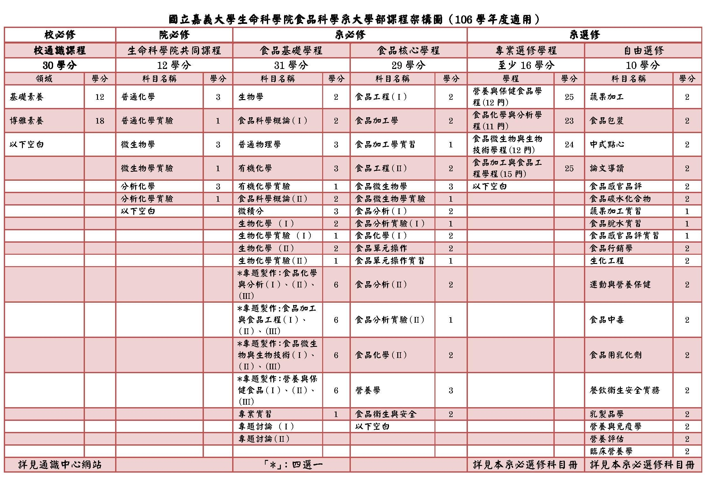

常見問答
新生專欄
更新日期：2021-06-18
特色
本系採理論與實務並重原則，著重基礎能力，並加強食品工業專業知識與技術之傳授，以培養食品專業人才。
其教育特色以培養兼具食品科學理論專業知識與實用技能之人才，以擔負食品製造、管理、創新、企劃等之實務及研發能力，以期為食品工業界提供專才，促進經濟發展。在實際教學上，採理論與實務並重原則，著重基礎能力，並加強食品工業專業知識與技術之傳授。另加以品德倫理觀念之灌輸，培育具有專業知識及敬業精神的中堅幹部。 食品科技為民生工業最重要的一環，營養豐富且安全衛生的食品是促進且保障國人健康的屏障，達到此種目標需要食品科技人才不斷的貢獻心力，本系的教育目標即在培育國力維繫及國家發展不可或缺的食品科技人才。配合科技發展與國家社會之需求，除了傳統的食品加工與研究外，本系也強化在食品生技、健康食品、慢性病預防食品等新興項目之研究與開發。
食品科技是需要結合學術理論與實際應用的一個學門，本系學生需要先接受完整的一般基礎學科訓練，此類課程包括微積分、物理、有機化學、分析化學、生物化學、微生物學等課程。專業基礎課程則包括食品化學、食品微生物、營養學、食品工程、食品單元操作等課程。本系實用課程包括有罐頭製造學、食品脫水學、食品冷凍學、食品原料學、食品添加物、蔬果加工、畜產加工、穀類加工、發酵學等課程。本系最突出的特色在於實用課程均配合實驗或實習，以強化理論與實務之結合。
課程地圖之課程架構
